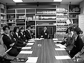
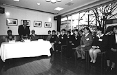
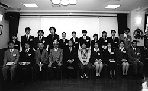
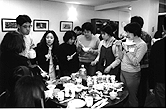
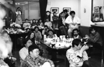
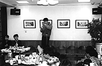

98.4.1（水）
・朝11時より社員全員参加で、98年度の入社式が行われる。今年は中途採用も入れて総勢17人の大所帯。鈴木プレジデンドの司会のもと、徳間社長の挨拶に始まり、宮崎、高畑両監督のお話、全員の自己紹介で終了する。因みに徳間社長の新人達への贈り物は、五年分の日記帳。



・早速各部署で研修が始まっているが、制作部に入った新人の斎藤君に早くも過酷な試練が。夕食の出前でナス味噌定食を注文したはずの斎藤君、よく見るとおかずだけしか食べていない。「あれ、ダイエット？」と聞くと「ごはんが無かったのでこういう物かと…」という返事。「おいおい、御飯無しの定食があるかー」「若者をイジメるなよ」と罵声が飛び交う中、「もののけ姫」の制作中に、あっと言う間に辞めて行った新人制作の責任を「デスクのイジメ」となすりつけられた某人物は、「神村デスクの新人制作イジメか…歴史は繰り返す」とため息を洩らしていた。
98.4.2（木）
・午後にOLMの村田氏が来社。ベルセルクが終わって一寸だけ暇になったらしい。社員や高畑さんもジブリ以外のアニメ界の状況を知りたがったのか、話しが尽きない。帰ったのはもう12時。
・各部署で本格的な研修に入っているが、何人かの作画スタッフは、研修生が帰った後の机を覗いては上達具合を確認している。
・もう二年も車に乗っていなかった制作斎藤君が、吉祥寺へ買い物に行くのに、比較的きれいな制作の車シャレードに乗っていったため、「シビックにしろよ（破壊寸前のボロ車）」と乗せた居村君に非難が集中している。
98.4.3（金）
・コミックボックスの三好、平林コンビが二年ぶりのコミックボックス総決算号を持って来社。なんでも最近少女漫画誌を作ると言って、ある編集者に任せっきりにしていたら、金だけ使い込んだあげくほとんど詐欺同然に逃げられてしまったらしい。なんといっていいやら…。
・美術の二人が再びボードを高畑さんに見せる。
・明石映画サークルの方々が来社。お土産のくぎ煮が社内各所に置かれるが、これが大好評。夕食の出前に付けて食べていた者多数。
98.4.4（土）
・小金井公園の花見の影響で、東小金井駅周辺はいつもの倍くらいの人出。おまけに周りの道路は大渋滞。
・野中さんが第二回引っ越し記念新居お披露目パーティを開催する。今回のメンバーは出版部の女性陣と、前回呼ばなかったため拗ねていた一村教授。ところで前回も今回も呼ばれなかった制作部居村氏等、一部のスタッフから「差別だ」と苦情が出ているが、このまま第三回を行わなければ、暴動がおきそうな状況になりつつある。
98.4.6（月）
・今日から制作部の新入社員として高橋望氏が出社。
・午後4時より花見＆新人歓迎会が行われる。本来小金井公園で行われる予定であったが、雨のため場所をバーに変更する。日曜日返上で仕上げの女性陣が作ったくれたおでん等豪華な食べ物が揃い、宴は夜11時頃まで繰り広げられる。新人達の芸も披露される。今年の新人は、無口な人、恥ずかしがりやな人、いかれた歌唄いな人等バラエティ豊か。



98.4.7（火）
・昨日の花見のおでんが大量にあまり、今日は昼飯からみんなでおでん三昧。私も朝夕おでん定食。
・夜、メインスタッフで今後の原動画についての話し合いを持つ。手法が一寸特殊なので、どういうタイミングで人数を増やしていくか問題となる。
98.4.8（水）
・現在斎藤君が一人で処理している動画について、追加メンバーを決定するため小西、斎藤両氏と打ち合わせ。
・原画追加希望リスト作成。
・今日、明日の二日間、新人達は徳間書店本社や関連会社の見学。昼食時に人で溢れ返っていたバーも今日は静か。
98.4.9（木）
・門屋さんから、○○○○○○のシナリオの一部が渡される。早速チェック。
・百瀬さんから、○○用に、150フレームでSK55という厚めのレイアウト用紙と同じ厚さの紙を作画に使いたいとの相談。早速ナカザワに注文。
・○○氏がオリジナル企画を高畑さん等に見せ、アドバイスをもらっていた。
98.4.10（金）
・「○○○○」のデジタル打ち合わせが行われる。
・新たなクイックアクションレコーダーマンとして制作部の新人斎藤君に白羽の矢があたり養成開始。
・先月、テレビ番組制作のため、宮崎監督らがサハラ砂漠へ行っていた時の模様が、NHK衛星第2で放送される予定（5月9日（土）8時45分「世界・わが心の旅」）。また、アニメージュ5月号では特集記事が掲載されている。日誌3月18日の写真にサハラ砂漠を背に、宮崎監督と一緒に写真に写っていたのは庵野監督だったのだが、庵野監督がサハラ砂漠に現れた理由は来月号のアニメージュと日本テレビで明かされるらしい。
98.4.11（土）
・赤坂イマジカで○○○○のMAが行われいる。約１時間分が予定よりかなり早い4時間で終了する。
・鈴木プロデューサーが会社に置いてあった私物の漫画本を古本屋に持って行くよう、米沢さんに依頼。
・演助の伊藤氏が、お試し版マックQARをより完全なものにしようと悪戦苦闘しているが、ああしようこうしようと次々とアイディアが浮かび、井上さんを困らせている。
98.4.13（月）
・明日はサンライズのもこまっつと野球の試合をする予定であるが、天気予報は雨。最近体調不良に見舞われている某氏は「しめた」と喜んでいるが、やる気満々の神村氏は「月が見えてきましたよ。明日は必ず来てくださいね」と某氏をいじめている。
98.4.14（火）
・某氏の祈りが通じたか野球部の試合が雨で中止。
・3時から各部署のメインスタッフを集めて、「となりのやまだ君」のテスト撮影に向けての、画面作成の基本方針を話し合う。動画、仕上げの問題を中心に話し合われ、今回は全てデジタルでペイントし、背景をデジタルカメラで撮影するため、実際のものがどうフィルムに再現されるのか、モニターでチェックしたものが、実際のフィルムと同じ色に再現されるのか、等も問題となる。
98.4.15（水）
・1時より赤坂イマジカにて、6時間のドキュメンタリー「『もののけ姫』はこうして生まれた。」（実は最近6時間の予定が、6時間40分位になってしまうことが判明）のナレーション収録が行われる。今日は第一巻の後半部分。テレビマンユニオンの浦谷さんが昨日の夕方4時すぎから書き上げたという28ページ分の原稿を受け取り作業開始。ナレーションを担当するのは、「電波少年」や「スーパーテレビ」でお馴染みの木村匡也さん。その場で渡された原稿に対し、それぞれのブロックを一度テストしただけで、時間通りに、しかも実に感じを出して読み上げる。プロの技を堪能。さて浦谷さんが書いてきた原稿、実は途中までしか出来ていなかった。ところが浦谷さん、木村さんが途中ラジオの収録で抜けた間に、残り20ページ以上を書き上げてしまう。は、速い。深夜1時頃無事終了。
・同じ時間、ジブリでは「もののけ姫」と「『もののけ姫』はこうして生まれた。」の記者発表が行われる。40名以上の記者が取材に訪れる。記者発表の模様は明日にも別ページで報告の予定。
98.4.16（木）
・某アニ○ージュ５月号の表紙を巡って議論が巻き起こる。最近流行のアニメキャラでは頬が出っ張り、そこから顎に向かう線が抉れた物が多く見られるが、青年期にアニメ黄金期を過ごしてきた高橋、神村、田中、近藤等30中～後半の者達にとってはそれが我慢がならないらしい。「原点が人間ではなく、２次元のアニメキャラから出発し、それをアレンジしたからではないか」とか「いやそもそも日本人の美的感覚に異変が起きているのだ」等、様々な意見が飛び交う。
・昨日まで首位と今シーズンやけに調子がいい中日の、熱狂的ファンである鈴木プロデューサーが「巨人対中日」戦をドームで観戦するも巨人の勝利で首位転落。因みにジブリで人気のあるチームは巨人と阪神（最近復帰した高橋さんも大の阪神ファン）。中日を応援する者は少ない。
98.4.17（金）
・音響監督の若林さん等が集まり、声の出演者についての話し合いが持たれる。まつ子、たかし、しげについて大体目処がつきかけているがその他は未定。関西系の役者も多いため、大阪での収録も考えられている。
・テスト撮影に向け、ボードの選択が行われるが、量があまりに多いため、美監の田中直哉、武重両氏と撮影監督の奥井さんに一任することに。高畑さんの要望は「色が豊富にあった方が良い」というもの。
98.4.18（土）
・「となりのやまだ君」のシナリオを縦書きに直す指令が出る。ところが元々書かれたソフトのクラリスで変換したところ、字間が自由に変えられないとか、フッダの設定が縦書きの場合左のみの設定になっている（縦書きの本だって、普通は紙の下側にページ数を付けている）など、不都合がありすぎ、他のソフトを探すことに。結局手近にあったマックワードを使うことになったのが、スクロールその他の動きが、縦書きになると異常に遅くなる。日本語って縦書きが本来の姿じゃなかったっけ。ぶつぶつ…
・大谷さんがシーン1-75の打ち合わせ。
98.4.20（月）
・「となりのやまだ君」の動画は一寸特殊な方法を取っているため、動画チェックの斎藤氏が全て描いてきたが（もちろんスケジュール的に、順調に遅れていて、作監上がりが少なかったという理由もあるけど…）、いよいよ社内の動画スタッフ数人がIN。
・試運転ばかりじゃいつまで経っても完全なものにはならない、という訳でマック版QARをついに実線投入。制作斎藤氏がCG部泉津井さんに使い方を教わる。今までマックをほとんど触ったこともなかったので悪戦苦闘している。
98.4.21（火）
・絵コンテシーン1896、7CUT分アップ。
・マック版急速演技記録計(仮名)お試し版が実戦配備されているが、元のQARとカメラを共有しているため、一人では操作できないとか、絵を重ねることは出来るが、重なった部分を消すことが出来ない、とかいくつか問題が出てきている。まあいまのうちに問題点を全て洗い出して完全なものに近づいてくれれば。
・柳沢さんからジブリ分室（出版部が使用）に置く、ビデオ、テレビを買ってきて欲しいとの指令を受けた神村氏が三鷹のラオックスに行くも定休日、武蔵境のイトーヨーカドーに行くもここも定休日。結局手ぶらで帰って来ることに。
98.4.22（水）
・赤坂イマジカにて「『もののけ姫』はこうして生まれた。」のナレーション入れが行われる。今日で第二巻の残りと、第三巻まで入れてしまう予定であったが、浦谷さんの原稿が間に合わず（かなりきついスケジュールの為、脳が死んでいる状態らしい）、1時間半ほど残ってしまう。次回日曜日でナレーションは終了の予定。
・夜暑いので、居村氏と近所のラーメンFFで冷やしつけ麺を食べにいったところ、近くの草原でなんと蝉が鳴いていた。故郷の北海道でも既に30℃を超えたというし、今年も毎年恒例の異常気象か。
98.4.23（木）
・縦書きシナリオ完成。
・ジブリに溜まった堆肥を、近所の農家の人にわざわざ取りに来てもらったところ、こっちがお礼をしなきゃいけないのに、お土産にたけのこまでもらってしまう。せっかくなので、たけのこご飯を作りみんなで食べることに。総務洞口氏を中心に美術の新人等が手伝い、駐輪場横のスペースで、丸太から鉈で薪を作り、火をおこし、炊き出し用の巨大釜二つに米5キロ（非常用の備蓄米が古くなってきたのでその一部を食べることに）以上を使って調理される。午後6時すぎに社内放送を入れ、社員に配られるが、大量に作ったため、余ると判断し最初から大盛りに盛って配ったところ、見事に足りなくなり、食いはぐれる人が数人出る。
98.4.24（金）
・日芸で教えている高畑さんだが、今年は就職難が影響しているのか、大学院の授業が大盛況らしい。よって本日は夕方出社。
・テスト撮影終了。試写は来月早々にイマジカで行うことに。
・絵コンテ、シーン6-14、5CUT73秒分アップ。
・6月に入ったら声の収録をなどという話しもちらほら聞こえてきたが、それに向け、演技の参考に、今まで出来た部分の動画を、簡易的に再生させたビデオを作成することになる。
98.4.25（土）
・職場委員会が行われる。「もののけ姫」の興行成績、ビデオ発売の予定、「となりの山田くん」の制作状況、給与体型の変更、遅刻の問題、ゴミの問題等が話し合われる。
・絵コンテ、シーン4-60、15CUT 104秒分アップ。
98.4.28（火）
・絵コンテ、シーン1-90、2-57、12CUT 53秒分アップ。
・安藤氏、7CUT分打ち合わせ。
・動画チェックの斎藤氏が、動画注意事項をマックで打っている。ところが、今回動画の書き方がいつもとかなり違っているため、説明事項が膨大になってしまい、絵を入れたり、箇条書きにしたり、分かりやすくしようと四苦八苦しているが、それでもかなりのページ数になってしまい、斎藤氏は「これじゃ誰も読んでくれないのでは…」と嘆いている。
98.4.30（木）
・百瀬さんが作業を続けていた○○○○ー篇の絵コンテ改定作業が終了。○○○1が55CUT 249秒、○○○2が23CUT 113秒。
・高坂氏が仕事の話しでジブリに来社（勿論自転車で）。昨日の休日にも180キロ程走ってきたらしく、健康そのものという感じ。自転車用パンツから見える足の筋肉が尋常ではない。
・午後には、現在デジタル○ンジンで働いている野崎氏が来社。こちらは自転車が荻窪でパンクしたため電車で来る。野崎氏も口では「いやーもう駄目ですよ」と言いながら、自転車のギアをより高速用に変えつつ、毎日片道20キロ以上を自転車通勤しているそうだ。
| 次のページへ |
| 日誌索引へ戻る |